सत्ता की साझेदारी लोकतंत्र का मूलमंत्र है। इसे गहराई से समझने के लिए हम यूरोप के एक छोटे से देश बेल्जियम और एशिया के द्वीप देश श्रीलंका की तुलनात्मक स्थिति का अध्ययन करते हैं। दोनों ही देशों में गहरा जातीय और भाषाई अंतर था, परंतु दोनों के नेताओं ने इसके समाधान के लिए बिल्कुल विपरीत रास्ते चुने।
बेल्जियम यूरोप का एक छोटा सा देश है, जिसका क्षेत्रफल भारत के हरियाणा राज्य से भी छोटा है। इसकी सीमाएं फ्रांस, नीदरलैंड्स, जर्मनी और लक्जमबर्ग से मिलती हैं। इसकी कुल आबादी लगभग 1 करोड़ से थोड़ी अधिक है। परंतु इस छोटे से देश के समाज की जातीय बनावट बहुत ही जटिल है:
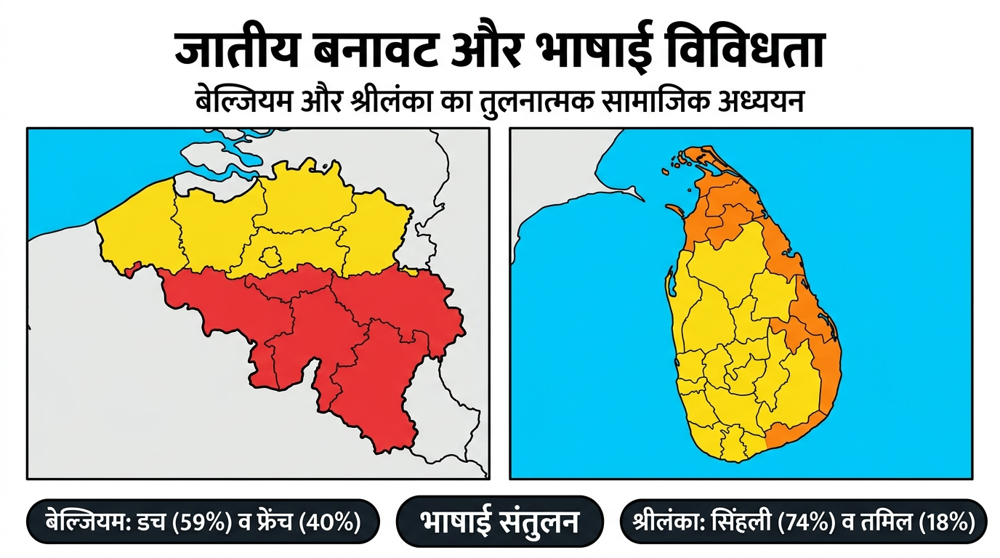
बेल्जियम में रहने वाले लोगों की भाषाई संरचना को निम्नलिखित दो प्रमुख भागों में बांटा जा सकता है:
शेष 1% आबादी जर्मन भाषी है जो देश के पूर्वी हिस्से में रहती है।
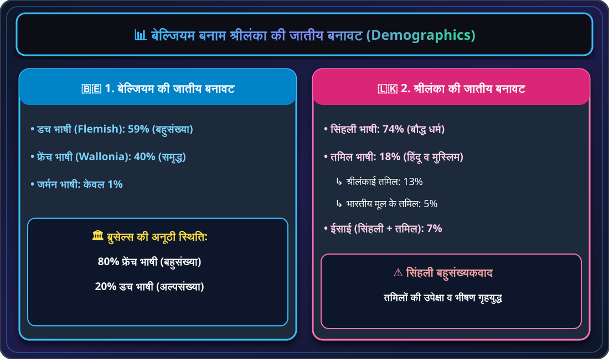
देश की राजधानी ब्रुसेल्स में स्थिति बिल्कुल उलट थी। जहाँ पूरे देश में डच भाषी बहुसंख्यक (59%) थे, वहीं राजधानी ब्रुसेल्स में:
फ्रेंच भाषी लोग आर्थिक और शैक्षणिक रूप से अधिक मजबूत थे, जबकि डच भाषी लोगों को विकास का लाभ काफी बाद में मिला। इस आर्थिक विषमता के कारण 1950 और 1960 के दशक में डच और फ्रेंच बोलने वाले समूहों के बीच तनाव बढ़ने लगा।
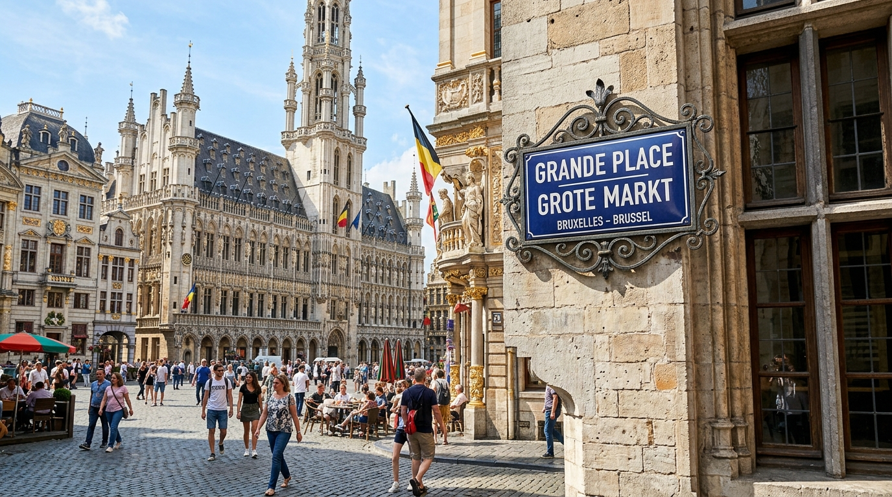
श्रीलंका भारत के दक्षिणी तट से कुछ किलोमीटर की दूरी पर स्थित एक द्वीप देश है। इसकी आबादी लगभग 2 करोड़ (हरियाणा के बराबर) है। श्रीलंका की आबादी में कई सामाजिक समूह हैं:
1948 में स्वतंत्रता प्राप्त करने के बाद, श्रीलंका के सिंहली समुदाय के नेताओं ने अपनी बहुसंख्या के बल पर शासन पर अपना प्रभुत्व जमाना चाहा। लोकतंत्र के नाम पर उन्होंने बहुसंख्यकवादी नीतियां लागू कीं।
1956 में श्रीलंका की संसद ने एक कानून पास किया जिसने देश के सामाजिक ताने-बाने को छिन्न-भिन्न कर दिया:
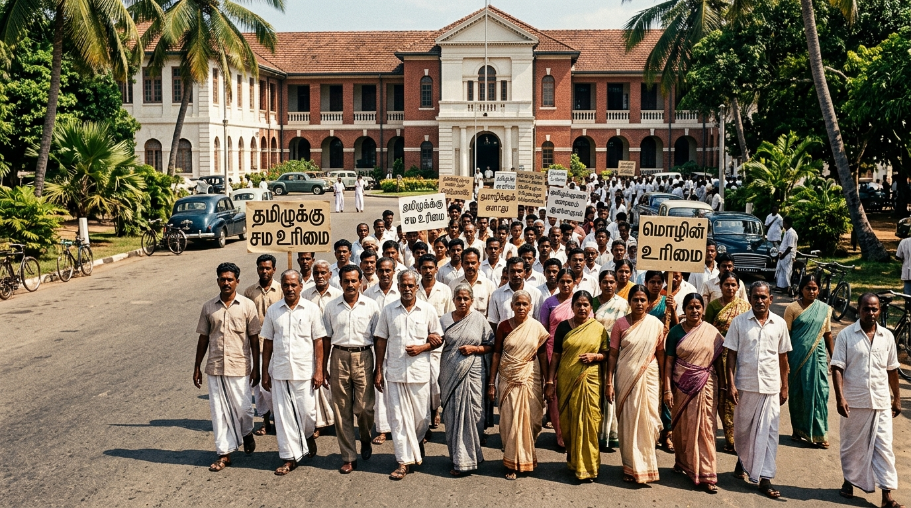
इन सरकारी फैसलों ने श्रीलंकाई तमिलों में अलगाव की भावना बढ़ा दी। उन्हें लगा कि बौद्ध सिंहली नेताओं वाली कोई भी राजनीतिक पार्टी उनके धर्म और संस्कृति के प्रति संवेदनशील नहीं है। तमिलों ने अपनी राजनीतिक पार्टियां बनाईं और तमिल को राजभाषा बनाने, क्षेत्रीय स्वायत्तता हासिल करने तथा शिक्षा व नौकरियों में समान अवसरों की मांग को लेकर संघर्ष शुरू किया।
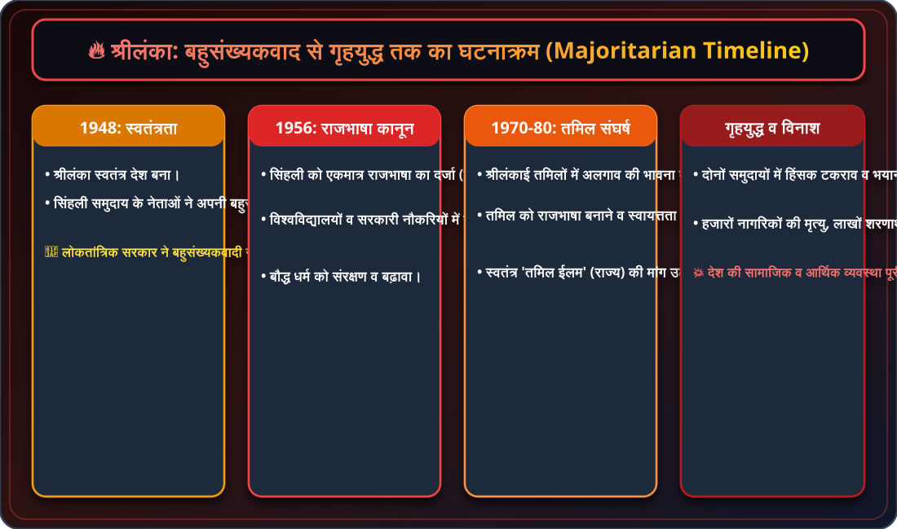
1980 के दशक तक उत्तर-पूर्वी श्रीलंका में एक स्वतंत्र तमिल राज्य (तमिल ईलम) बनाने की मांग को लेकर कई संगठन (जैसे LTTE) बन गए। जल्द ही यह अविश्वास एक भयानक गृहयुद्ध में बदल गया, जिसमें दोनों पक्षों के हजारों निर्दोष लोग मारे गए और लाखों लोग बेघर हो गए।
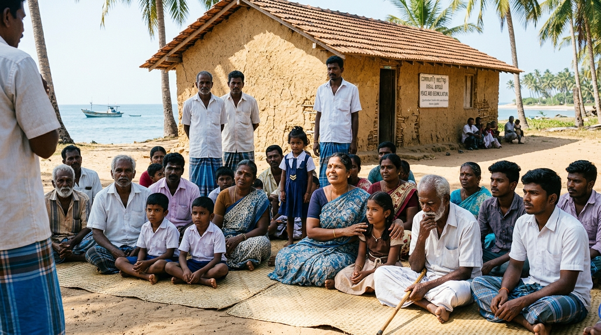
बेल्जियम के नेताओं ने श्रीलंका से बिल्कुल अलग रास्ता अपनाया। उन्होंने महसूस किया कि देश की एकता तभी बनी रह सकती है जब सभी समुदायों की भावनाओं और हितों का सम्मान किया जाए। 1970 से 1993 के बीच बेल्जियम के नेताओं ने अपने संविधान में 4 संशोधन किए ताकि सभी नागरिक एक साथ मिलकर रह सकें।
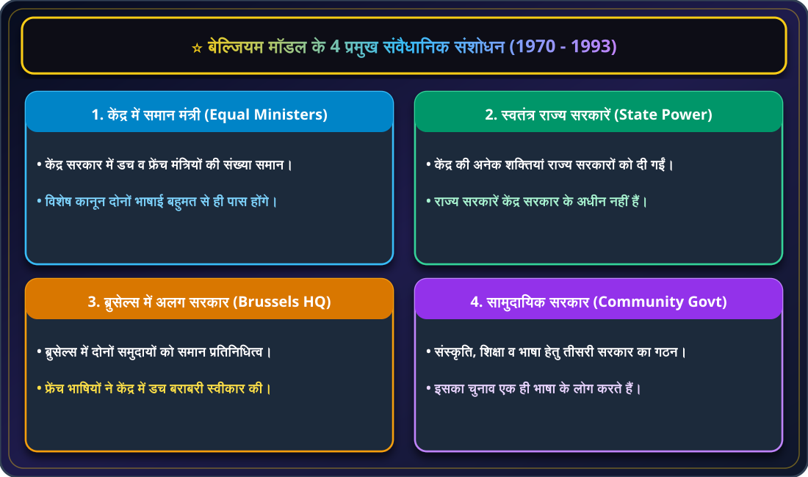
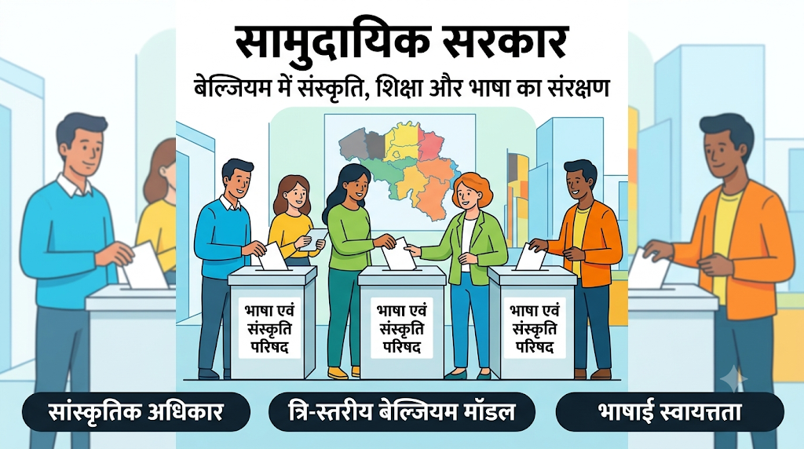
बेल्जियम का यह मॉडल भले ही काफी जटिल लगे, लेकिन इसने देश में गृहयुद्ध की आशंकाओं पर विराम लगा दिया और भाषाई आधार पर देश के टुकड़े होने से बचा लिया। जब यूरोपीय देशों ने मिलकर एक संघ का गठन किया, तो बेल्जियम की इस अनूठी समझदारी के कारण ही ब्रुसेल्स को यूरोपीय संघ का मुख्यालय चुना गया।
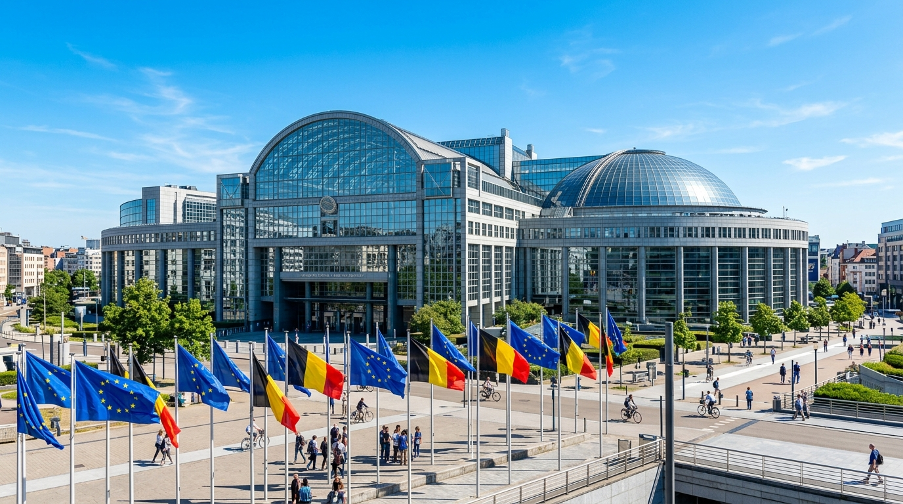
बेल्जियम और श्रीलंका के उदाहरणों से भारत जैसे विशाल और बहुभाषी देश ने एक महत्वपूर्ण सबक सीखा। भारत के नेताओं ने श्रीलंका वाली गलती करने से परहेज किया और किसी एक भाषा (जैसे हिंदी) को पूरे देश पर जबरन राष्ट्रभाषा के रूप में नहीं थोपा।
इसके बजाय, भारतीय संविधान ने बेल्जियम की तरह समझदारी दिखाते हुए भाषाई सामंजस्य की नीति अपनाई:
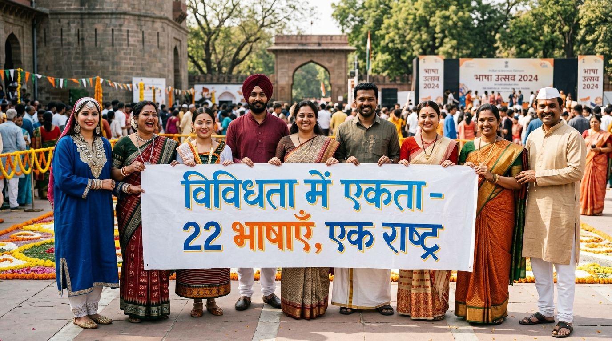
बेल्जियम और श्रीलंका की इन दोनों कहानियों से हमें सत्ता की साझेदारी के महत्व का पता चलता है। सत्ता की साझेदारी के पक्ष में दो प्रमुख तर्क दिए जा सकते हैं—युक्तिपरक तर्क और नैतिक तर्क।
1. युक्तिपरक तर्क: यह तर्क लाभ-हानि के समझदारी भरे गणित पर आधारित है। सत्ता का बंटवारा विभिन्न सामाजिक समूहों के बीच टकराव के अंदेशे को कम करता है। चूंकि सामाजिक टकराव आगे चलकर हिंसा और राजनीतिक अस्थिरता का रूप ले लेता है, इसलिए सत्ता की साझेदारी राजनीतिक व्यवस्था के स्थायित्व के लिए बहुत जरूरी है। बहुसंख्यक समुदाय की इच्छा को जबरन दूसरों पर थोपना अल्पसंख्यकों के साथ-साथ बहुसंख्यकों के लिए भी विनाशकारी सिद्ध होता है।
2. नैतिक तर्क: यह तर्क लोकतंत्र की आत्मा पर बल देता है। लोकतंत्र का सीधा अर्थ ही यह है कि जो लोग इस शासन व्यवस्था के अंतर्गत आते हैं और जिनके ऊपर इसके फैसलों का असर पड़ता है, उनके साथ सत्ता को बांटा जाए। एक वैध और आदर्श सरकार वही है जिसमें नागरिक अपनी भागीदारी के माध्यम से शासन व्यवस्था से जुड़ते हैं।
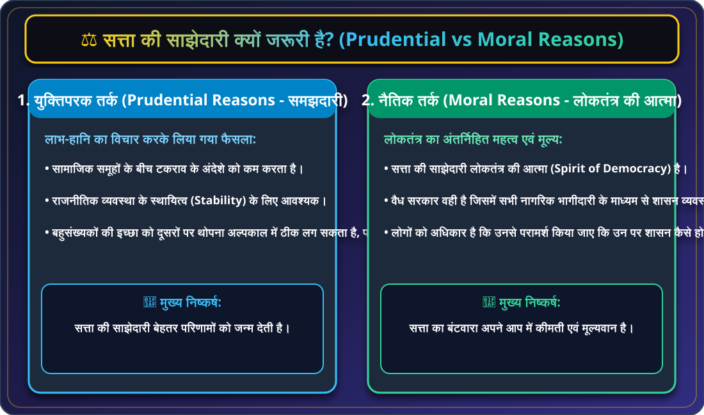
| क्र.सं. | युक्तिपरक तर्क | नैतिक तर्क |
|---|---|---|
| 1 | यह विभिन्न सामाजिक समूहों के बीच टकराव को कम करता है। | यह लोकतंत्र की आत्मा है। |
| 2 | यह राजनीतिक व्यवस्था के स्थायित्व को बढ़ाता है। | प्रभावित नागरिकों से परामर्श लेना लोकतंत्र का मूल नियम है। |
| 3 | यह बहुसंख्यक वर्ग की तानाशाही व हिंसा से देश को बचाता है। | जनता की भागीदारी ही सरकार को वैध बनाती है। |
| मुख्य ध्यान | बेहतर परिणामों की प्राप्ति। | सत्ता बांटने का अंतर्निहित लोकतांत्रिक मूल्य। |
भारतीय लोकतंत्र में भी संविधान की उद्देशिका (प्रस्तावना) नागरिकों को सामाजिक, आर्थिक और राजनीतिक न्याय की गारंटी देती है, जो सत्ता के नैतिक विभाजन की नींव है।
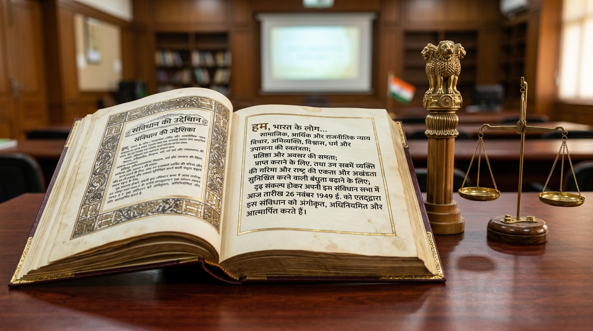
लंबे समय तक यह माना जाता रहा था कि सरकार की सारी शक्तियाँ किसी एक व्यक्ति या समूह के हाथ में रहनी चाहिए ताकि फैसले जल्दी लिए जा सकें। परंतु लोकतंत्र के आगमन के साथ इस धारणा में बदलाव आया। आधुनिक लोकतांत्रिक व्यवस्थाओं में सत्ता की साझेदारी को मुख्य रूप से 4 रूपों में देखा जा सकता है:
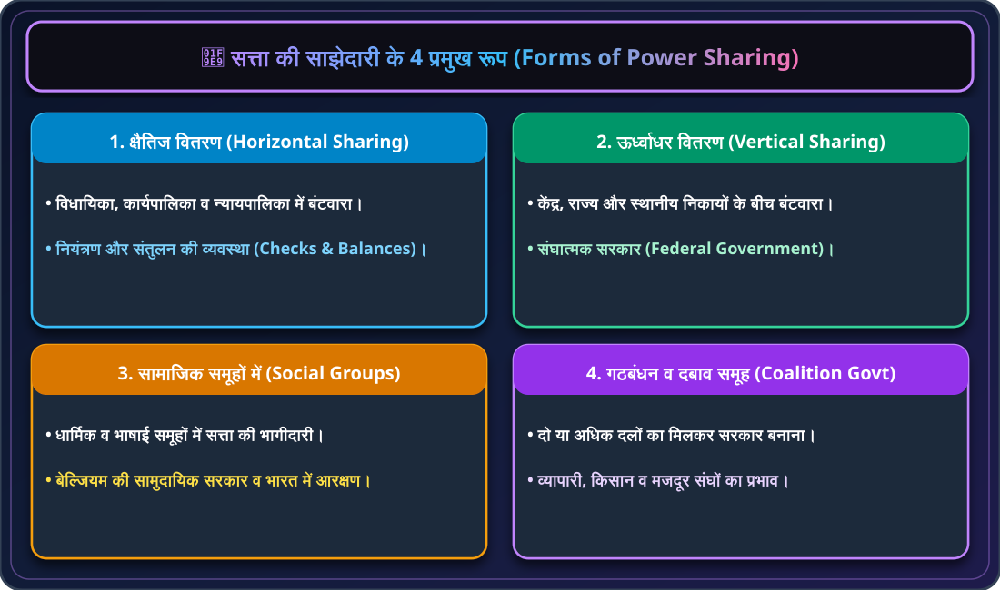
जब सत्ता का बंटवारा सरकार के विभिन्न अंगों—जैसे विधायिका, कार्यपालिका और न्यायपालिका के बीच एक ही स्तर पर किया जाता है, तो इसे क्षैतिज वितरण कहते हैं। इसमें कोई भी एक अंग असीमित शक्ति का प्रयोग नहीं कर सकता। हर अंग एक-दूसरे पर अंकुश रखता है, जिससे शक्तियों का संतुलन बना रहता है। इसे 'नियंत्रण और संतुलन की व्यवस्था' कहते हैं।
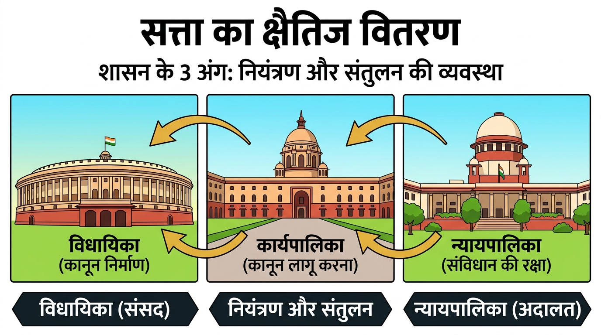
उदाहरण के लिए, भारत में मंत्री और सरकारी अधिकारी शक्तियों का प्रयोग करते हैं, परंतु वे संसद या राज्य विधानसभाओं के प्रति उत्तरदायी होते हैं। इसी प्रकार न्यायाधीशों की नियुक्ति कार्यपालिका करती है, लेकिन न्यायपालिका ही कार्यपालिका और विधायिका के कानूनों की संवैधानिकता की जाँच (न्यायिक समीक्षा) करती है।
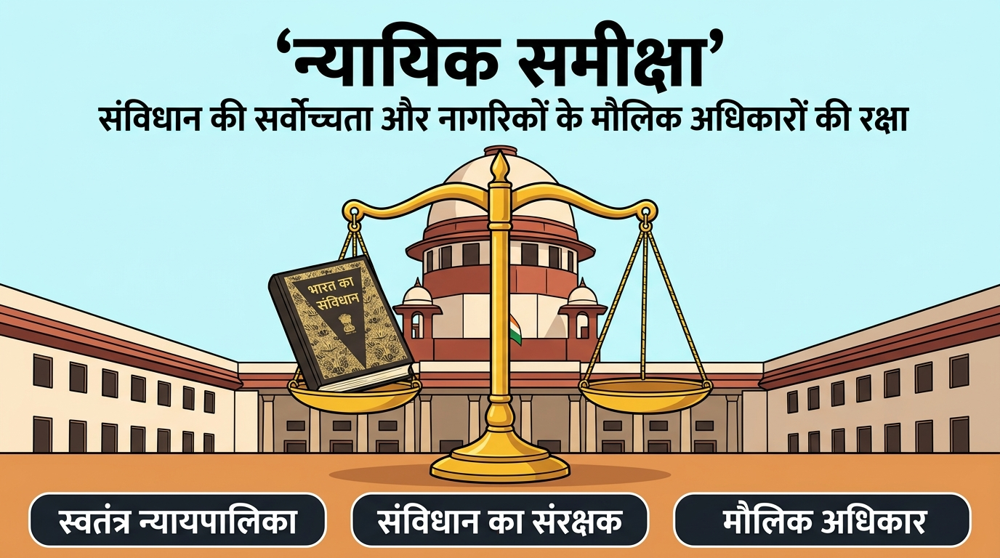
जब सत्ता का बंटवारा सरकार के विभिन्न स्तरों—जैसे पूरे देश के लिए एक केंद्रीय सरकार, प्रांतीय या क्षेत्रीय स्तर पर राज्य सरकारें तथा निचले स्तर पर स्थानीय निकाय (पंचायती राज व नगरपालिका) के बीच होता है, तो इसे ऊर्ध्वाधर वितरण कहते हैं। उच्चतर और निम्नतर स्तर की सरकारों के बीच शक्तियों का यह बंटवारा संघात्मक शासन कहलाता है।
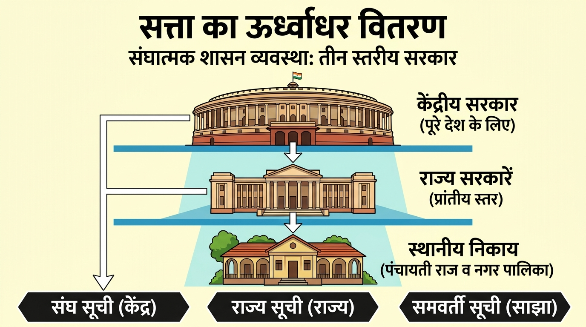
भारत में राज्य स्तर पर जनता द्वारा चुनी गई राज्य सरकारें और विधानसभाएं काम करती हैं, जिन्हें राज्य सूची के विषयों (जैसे पुलिस, कृषि, स्वास्थ्य) पर स्वतंत्र रूप से कानून बनाने का संवैधानिक अधिकार प्राप्त है।
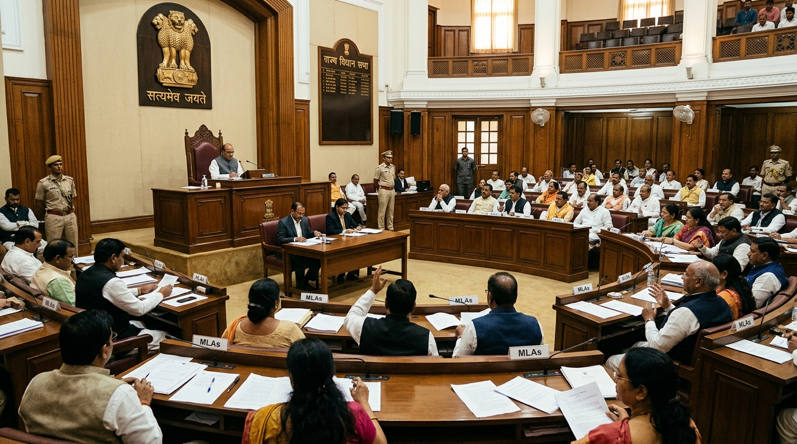
इसके अलावा भारत में 1992 के 73वें और 74वें संविधान संशोधन द्वारा पंचायती राज एवं नगरपालिकाओं के रूप में तीसरे स्तर की स्थानीय सरकार को भी मजबूत संवैधानिक अधिकार दिए गए, जिससे आम नागरिक सीधे शासन से जुड़ सके।
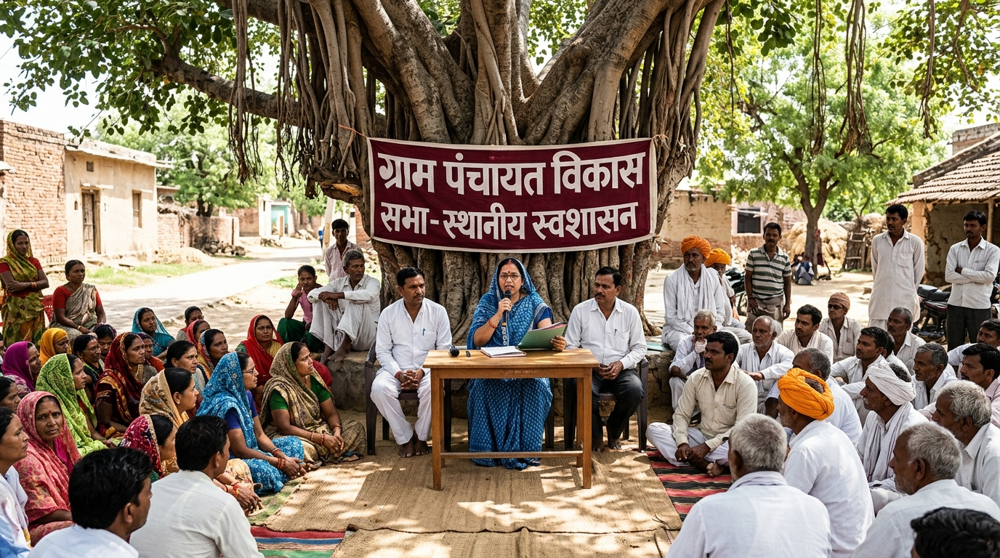
सत्ता का बंटवारा विभिन्न सामाजिक, धार्मिक और भाषाई समूहों के बीच भी हो सकता है। बेल्जियम की 'सामुदायिक सरकार' इसका बहुत सुंदर उदाहरण है। भारत जैसे बहुसांस्कृतिक देश में सामाजिक रूप से कमजोर वर्गों, पिछड़ों और महिलाओं को विधायिका और प्रशासन में हिस्सेदारी देने के लिए आरक्षित चुनाव क्षेत्रों का संवैधानिक प्रावधान किया गया है ताकि ये वर्ग खुद को शासन से अलग-थलग न महसूस करें।
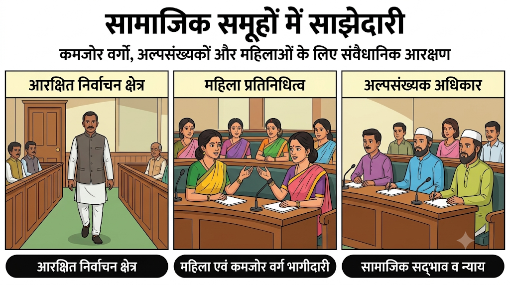
लोकतंत्र में सत्ता किसी एक दल के हाथ में केंद्रित न रहे, इसके लिए राजनीतिक दलों, दबाव समूहों और आंदोलनों के माध्यम से सत्ता की साझेदारी होती है। जब चुनाव में किसी एक पार्टी को स्पष्ट बहुमत नहीं मिलता, तो दो या अधिक विरोधी दल मिलकर गठबंधन सरकार का गठन करते हैं और सत्ता में प्रत्यक्ष रूप से भागीदार बनते हैं।
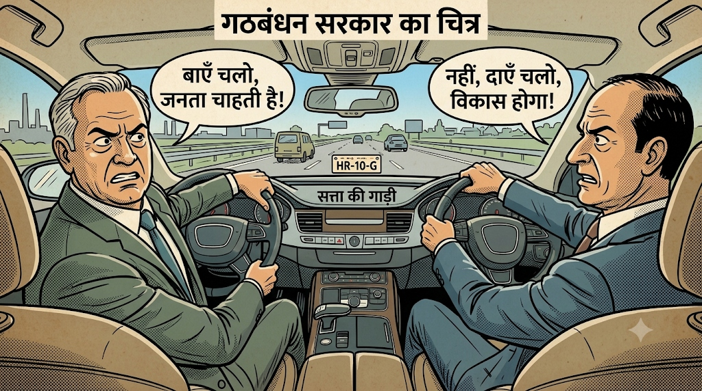
भारत में 1990 के दशक से गठबंधन राजनीति का दौर शुरू हुआ, जिसमें विभिन्न क्षेत्रीय दलों ने राष्ट्रीय स्तर पर सरकार बनाने और नीतियां तय करने में अपनी महत्वपूर्ण भूमिका निभाई।
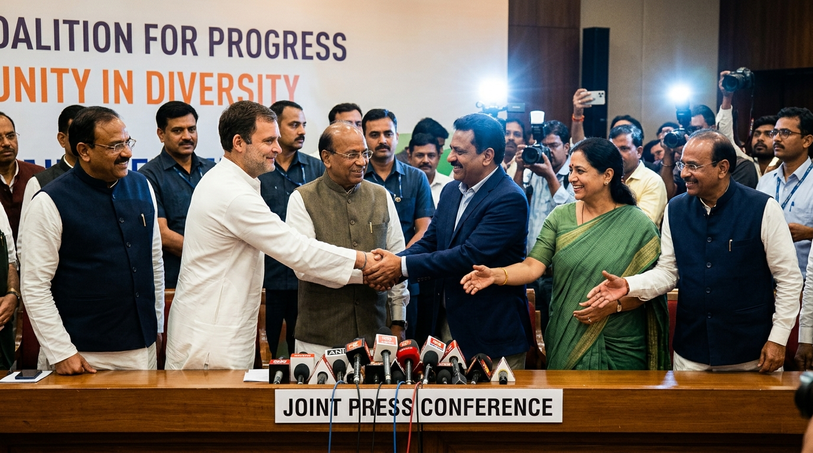
लोकतंत्र में यदि राजनेता अपनी शक्ति पर अंकुश न रखें, तो लोकतंत्र पटरी से उतर सकता है। पाठ्यपुस्तक का यह प्रसिद्ध व्यंग्यात्मक कार्टून दर्शाता है कि किस प्रकार शक्तिशाली नेता लोकतंत्र की लगाम अपने हाथ में रखने की कोशिश करते हैं।
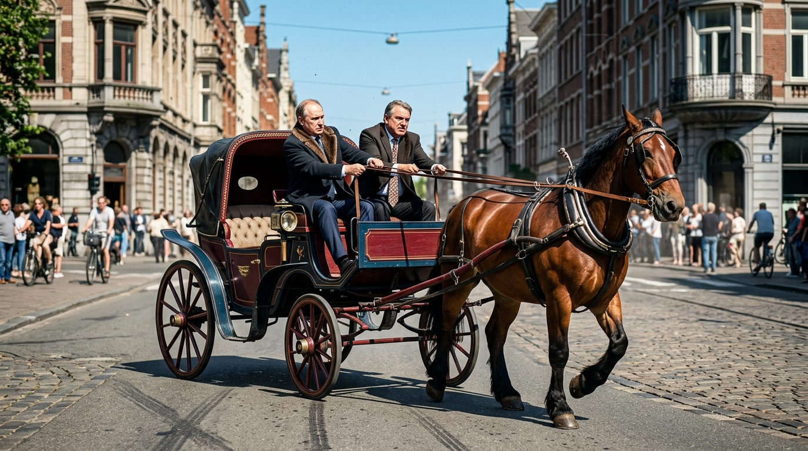
इसी प्रकार लोकतांत्रिक चुनावों में कॉर्पोरेट और उद्योगपतियों के भारी धनबल के प्रभाव को नियंत्रित करना और निष्पक्ष चुनाव सुनिश्चित करना भी एक बड़ी लोकतांत्रिक चुनौती है।
इसके अलावा व्यापारी, किसान, उद्योगपति और मजदूर संघ जैसे दबाव समूह भी विभिन्न सरकारी समितियों में भागीदारी करके या अपने आंदोलनों के ज़रिए सरकार की नीतियों पर प्रभाव डालते हैं और अप्रत्यक्ष रूप से सत्ता साझा करते हैं।
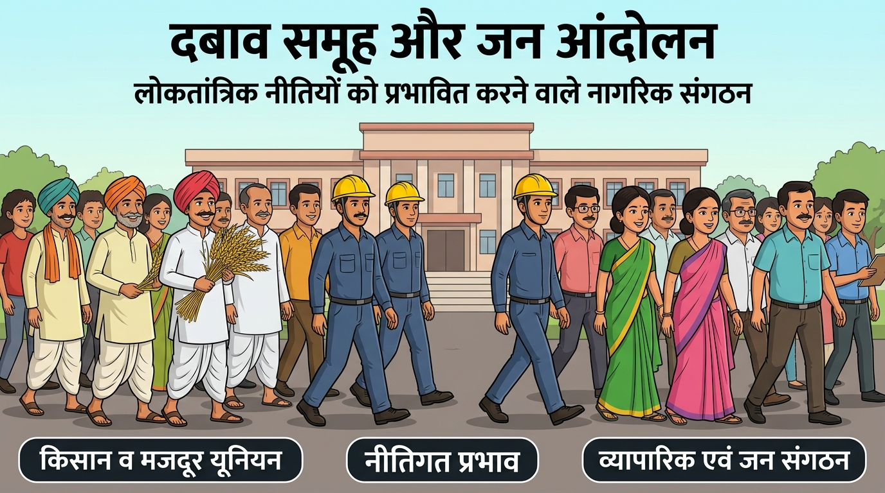
अंततः, सत्ता की सही साझेदारी ही भारत जैसे विशाल और बहुसांस्कृतिक देश को एकता के सूत्र में पिरोकर रखती है। विभिन्न धर्मों, भाषाओं, जातियों, क्षेत्रों और वर्गों के नागरिकों की सक्रिय लोकतांत्रिक भागीदारी ही हमारे लोकतंत्र को जीवंत, सशक्त और अखंड बनाती है।
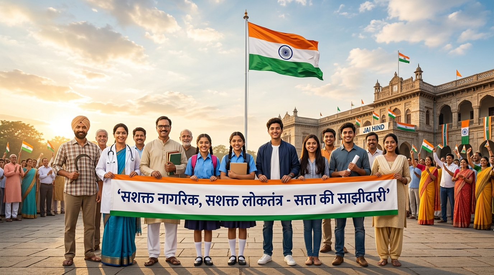